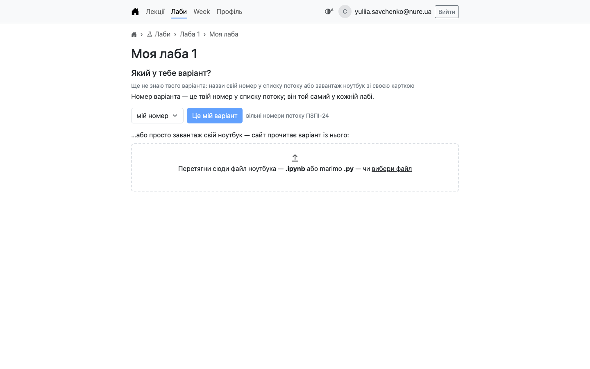
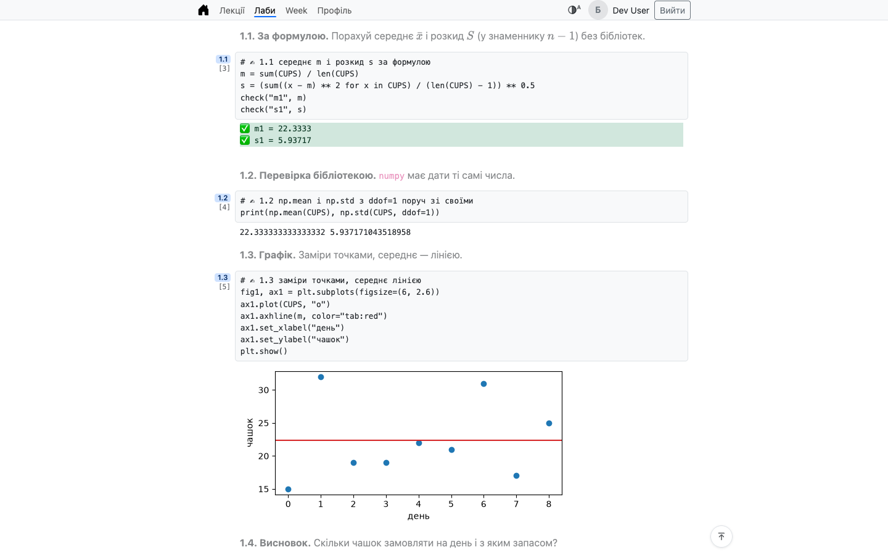
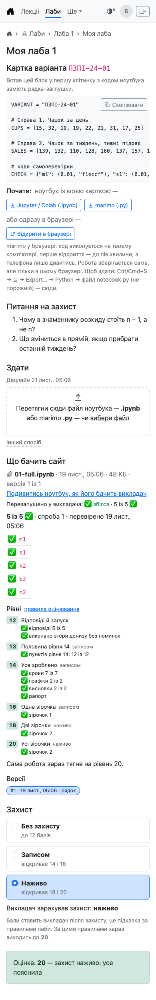
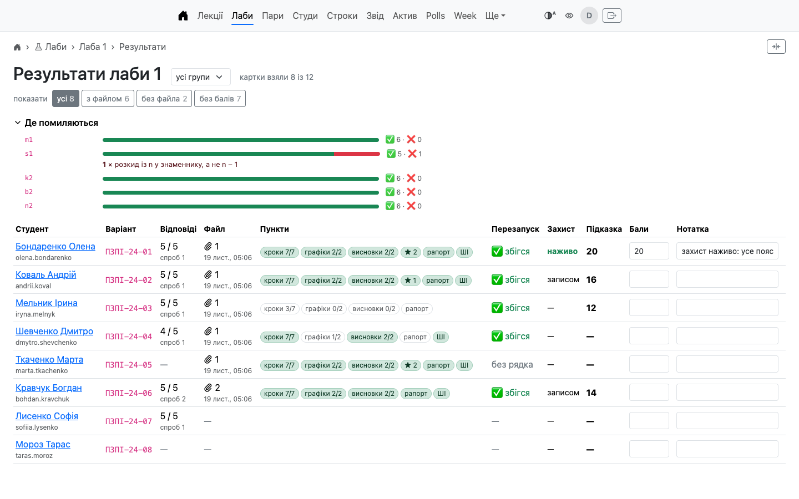
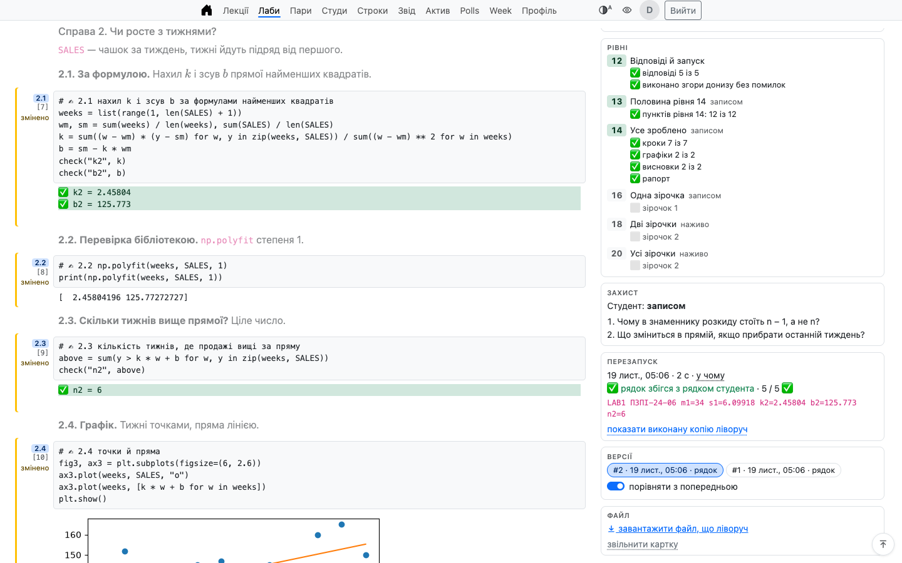
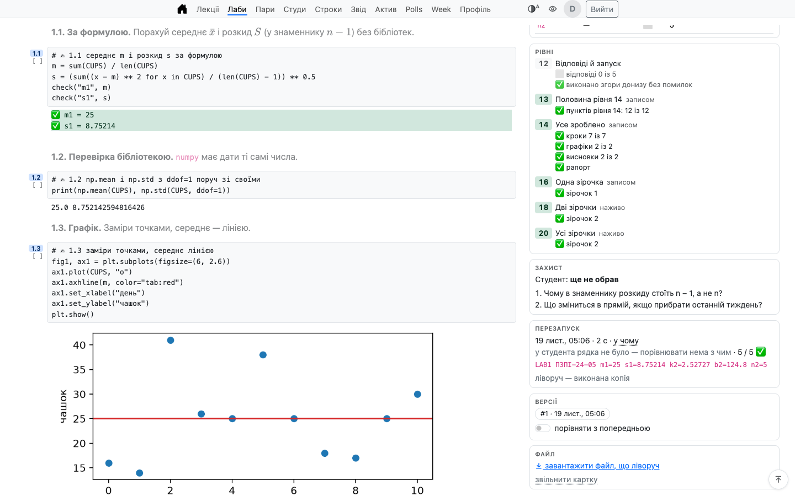
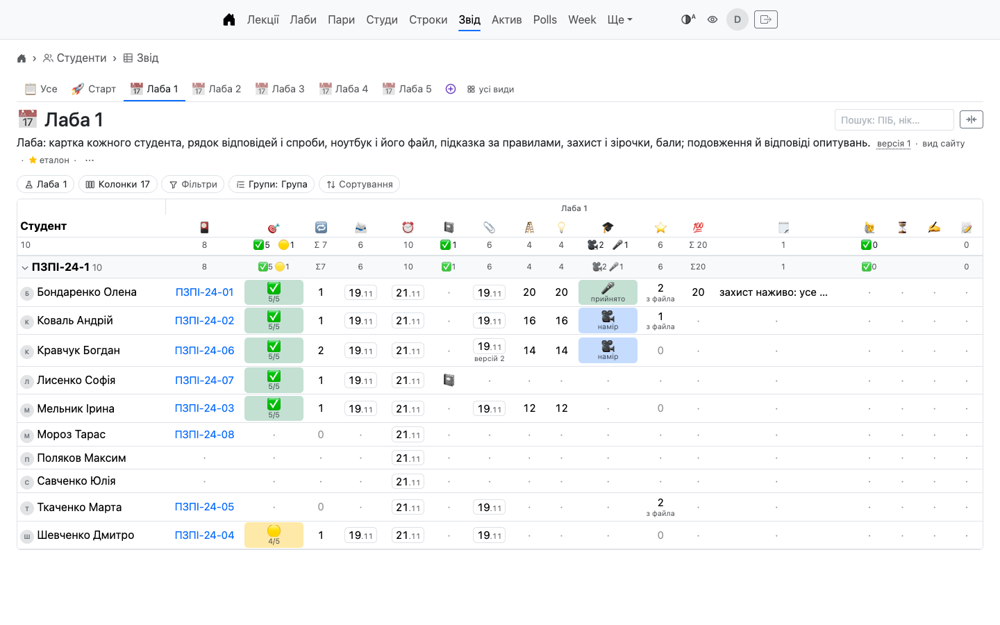

«Моя лаба» без картки
/labs/1/my- Що видно
- «Який у тебе варіант?»: вільні номери потоку або файл у поле.
- Навіщо
- Номер той самий у всіх лабах. Хто його не памʼятає, просто кидає ноутбук, і сайт читає варіант із картки у файлі.


python-labs · T354 · здача й перевірка лаб ods
гілка ods · 8 комітів T354 · без push · 19.11.2026 · вибори — тікет T362
Готово локально: студент здає лабу файлом ноутбука й одразу бачить те, що бачить сайт; ти перевіряєш потік з однієї таблиці й однієї сторінки на роботу. Сервер коду студентів не виконує.
.ipynb чи marimo .py і бачить ✅ / ❌, пункти рівнів і «сама робота тягне на рівень N».bin/nbrun виконує кожну роботу в Docker без мережі й без дисків.Раніше лаба приходила посиланням у чат, і все далі робилось руками. Тепер файл лежить на сайті, а все, що можна порахувати, сайт рахує сам.
/labs/N/my/labs/N/resultsКожен шар коштує тобі менше за наступний. Розуміння перевіряє лише захист, а три перші шари прибирають усе, що можна порахувати (тікет T356).
сайт — ✅ / ❌ з назвою помилки, кроки, графіки, висновки, зірочки, «згори донизу», підказка рівня
секунди, без тебе
bin/nbrun на твоєму ноутбуці — чи числа справді виходять із коду; виводи для marimo
хвилини на потік, без тебе
ти — якість висновків і графіків; режим «висновки» збирає їх підряд
1–2 хвилини на роботу
ти й студент — розуміння; питання з картки на тій самій сторінці
як і було
Знімки зі стенда: лаба, студенти й числа вигадані, справжній зміст лаб туди не потрапляв. Клік по знімку відкриває його повністю.
/labs/1/my
/labs/1/my
Сторінка довга — повністю по кліку.
/labs/1/my/nb/<id>

/labs/1/results
/labs/1/results/<варіант>[ ] — до сусіднього студента.

bin/nbrun
/table
Один ноутбук — один контейнер Docker: без мережі й без жодної теки хоста, корінь лише для читання, 1 ГБ памʼяті, одне ядро, 256 процесів, 5 хвилин, до 60 МБ виводу. Ноутбук заходить через stdin. Версії закріплено: Python 3.12, numpy 2.5, scipy 1.18, sympy 1.14, matplotlib 3.11, pandas 3.1, scikit-learn 1.9, marimo 0.25.2.
| Що пробував ноутбук | Що сталося |
|---|---|
| вийти в мережу | стримано помилка всередині, назовні нічого |
| прочитати файли хоста | стримано хоста в контейнері нема |
| записати на диск | стримано корінь лише для читання, /tmp — до 512 МБ |
| fork-бомба | стримано зупинено за 4–6 с |
| зайняти 4 ГБ памʼяті | стримано ядро Jupyter убито, решта жива |
| нескінченний цикл | стримано клітинка — 120 с, ноутбук — 270 с, далі docker kill |
| надрукувати 500 МБ | стримано обрізано |
| підробити результат | стримано перезапуск усе одно каже правду |
pip install, input() | стримано не зависає |
Діри в ядрі Linux чи в самому Docker. Контейнер ділить ядро з віртуальною машиною Docker Desktop, а в неї за замовчуванням спільна тека /Users. Тримай Docker Desktop оновленим; якщо жоден інший проєкт не монтує теки, прибери /Users у Settings → Resources → File sharing (T362, питання 9).
Скрипти bin/ хочуть Python ≥ 3.10, а системний python3 macOS — 3.9: запускати ~/.venvs/python-labs/bin/python bin/nbrun ….
marimo.app, ноутбук виконується сам за 10–30 с, графіки малюються..py до першого збереження дає порожній файл.notebook.py не порожній (≈ 20 КБ), і здай його на сайт.vite build ✅.javascript: і \href виходять текстом.check() → сайт.https://ods.labs.in.ua.У коміті 31ca915 /labs/N/my і /labs/N/results відкривали чужу сторінку.
Виправлено в HEAD комітом 27fb533 (сесія T357).
Рахує клітинки з графіком у розвʼязку: 2 · 2 · 5 · 2 · 8. Тексти лаб кажуть 3 · 2 · 4 · 2 (+1) · 6.
Вибрати правило в T362.
Перша зірочка читає картинки з теки: у браузері клітинка падає, перезапуск теку дає.
Вибрати, кому показувати кнопку.
Перша клітинка досі пише про меню Colab.
Поправити в тексті — сесії T357 / T355.
Colab / Drive написано й перевірено із заглушкою, на справжньому посиланні — ні.
Спробувати на одному своєму посиланні.
Студенти нічого з цього не бачать.
Деплой ods із Google-ключами.
BODY_MAX = 1100 КБНоутбук із графіками більший; звіт перезапуску з виконаною копією — до ≈ 16 МБ.
Підняти до ≈ 20 МБ у apps/ods-labs.
Colab, Firefox / Safari, телефон, Telegram, справжній домен.
Розділ 5.
http://127.0.0.1:5032/api/auth/dev-login?next=/labs/1/results. З нуля — cd .dev/.drafts/T354/stand && bash down.sh; bash seed.sh && bash up.sh.BODY_MAX ≈ 20 МБ і AGENT_TOKENS.ODS_URL / ODS_TOKEN у .site/.env, потім bin/nbrun build — один раз, ≈ 47 с.| № | Про що | «a» — так зараз або так раджу |
|---|---|---|
| Q1 | що студент здає | з лаби 3 — файл; за лаби 1–2 файл один раз |
| Q2 | підказка рівня студентові | драбина й «тягне на рівень N» |
| Q3 | графіки для 14 | клітинки з графіком у розвʼязку |
| Q4 | рівень 13 | не менше половини пунктів 14 |
| Q5 | marimo в браузері | кнопка для всіх із попередженням |
| Q6 | check() → сайт у лабах 4–5 | разом з їхніми версіями для сайту |
| Q7 | перезапуск | руками перед парою |
| Q8 | «Строки» ods зі здачі | так, вчасно = файл чи всі ✅ до дедлайну (S) |
| Q9 | /Users у Docker Desktop | прибрати, якщо ніхто не монтує |
| Q10 | банк ідей | три перші, нижче |
Клацнув клітинку — написав. Студент бачить зауваження у своєму ноутбуці, нова версія показує, що виправлено.
«Поставлено бали», «є зауваження»: студент не перевіряє сайт навмання.
Вчасно = файл чи рядок з усіма ✅ до дедлайну; «без репозиторію» зникає.
клік або Esc — закрити